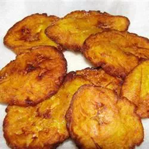

Tostones Recipe

Description
This is a recipe for Tostones.
Ingredients
- 2 cups vegetable oil for frying
- 3 plaintains, peeled and sliced into 1-inch
- Salt to taste
- Garlic powder to taste
Directions
- Heat the oiil in a heavy skillet over medium heat. Place a few plantain slices in the oil and cook until lightly golden in color for about three minutes. Drain on paper towels. Repeat with the remaining slices.
- While the plaintain slices are still warm, place them one at a time between two sheets of wax paper and flatten by hand to 1/4 inch thick. Return flattened slices to the skillet and continue frying until golden brown. Drain on paper towels and season with salt and garlic powder.